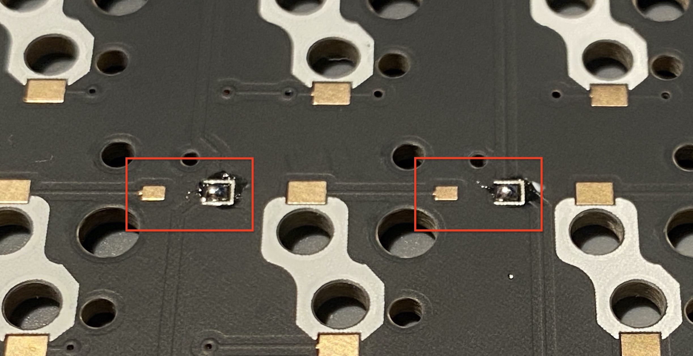

4. ダイオードの取り付け
知っておきたいこと
- ダイオードは各キースイッチの動作を正しく認識するためにつけます
- ダイオードには向きがあります（一方向にしか電流を流さない）
- ダイオードの向きが逆だと、対応するキースイッチが反応しないので向きに注意してください
配置箇所
- 基板の裏面に実装していきます
- 全部で48箇所あります
- 下の方は配置が少し変則的になっているのでお気をつけください
取り付け
SMDダイオード
- bat43では、全体をコンパクトにするためにSMD（表面実装）用のダイオードを採用しています
- チップが小さく、慣れないとハンダ付けが難しいかもしれないですが、頑張ってください！
- うまくいかない時はフラックスを塗布してあげるとやりやすいと思います
向き
- ダイオードの縦線が基板上のシルクで書かれた"コ"の字の方になるようにしてください
準備
- 小さい部品で数が多いので作業しやすいように準備をします
- ダイオードをつける向きは基本的に同じなので、ダイオードも向きを揃えておくと作業がしやすいです
- ダイオードの線は見にくく、揃えるのが大変なのでテープなどで工夫している人が多いです
- 自分は両面テープにくっつけて、先端が薄いタイプのピンセットで取っています。
（精密ピンセット わし口タイプTS-15）
- 右利きの場合、ダイオードの縦線を右側に、基板を図のように配置するとやりやすいと思います。
ハンダ付け
-
片方のパッドにハンダを盛る（予備ハンダ）
 -
予備ハンダを溶かして、ダイオードの片方の足をハンダ付けする
ダイオードが浮いてしまった場合は指やピンセットで押さえつけながら、ハンダを温め直してください（火傷に注意！）
-
もう片方の足をハンダ付けする
-
ハンダが乱れている箇所があればフラックスを塗り、温め直すとキレイになります
-
少ない所はハンダを足したり、盛り過ぎているところはコテ先でさっとハンダを取るなどして調整してください
-
48個付けたら完了です！
-
次のステップに進む前に2つ確認をしてください
- ダイオードの向きが合っていること
- ハンダ付けし忘れている箇所がないか
-
この2つは慣れている人でもやりがちなことです。
後工程になればなるほど修正が辛くなるので、今のうちにちゃんと確認しておきましょう！ -
全て付け終わった状態です
最終更新 November 30, 2019